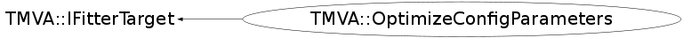

class TMVA::OptimizeConfigParameters: public TMVA::IFitterTarget
Function Members (Methods)
public:
| virtual | ~OptimizeConfigParameters() |
| static TClass* | Class() |
| virtual TClass* | IsA() const |
| TMVA::IFitterTarget& | TMVA::IFitterTarget::operator=(const TMVA::IFitterTarget&) |
| map<TString,Double_t> | optimize() |
| TMVA::OptimizeConfigParameters | OptimizeConfigParameters(const TMVA::OptimizeConfigParameters&) |
| TMVA::OptimizeConfigParameters | OptimizeConfigParameters(TMVA::MethodBase *const method, map<TString,TMVA::Interval> tuneParameters, TString fomType = "Separation", TString optimizationType = "GA") |
| virtual void | TMVA::IFitterTarget::ProgressNotifier(TString, TString) |
| virtual void | ShowMembers(TMemberInspector& insp) |
| virtual void | Streamer(TBuffer& b) |
| void | StreamerNVirtual(TBuffer& b) |
private:
| virtual Double_t | EstimatorFunction(vector<Double_t>&) |
| Double_t | GetBkgEffAtSigEff(Double_t sigEff = 0.5) |
| Double_t | GetBkgRejAtSigEff(Double_t sigEff = 0.5) |
| Double_t | GetFOM() |
| TMVA::MethodBase* | GetMethod() |
| void | GetMVADists() |
| Double_t | GetROCIntegral() |
| vector<int> | GetScanIndices(int val, vector<int> base) |
| Double_t | GetSeparation() |
| Double_t | GetSigEffAtBkgEff(Double_t bkgEff = 0.1) |
| TMVA::MsgLogger& | Log() const |
| void | optimizeFit() |
| void | optimizeScan() |
Data Members
private:
| map<std::vector<Double_t>,Double_t> | fAlreadyTrainedParCombination | save parameters for which the FOM is already known (GA seems to evaluate the same parameters several times) |
| TString | fFOMType | the FOM type (Separation, ROC integra.. whaeter you implemented.. |
| vector<Float_t> | fFOMvsIter | graph showing the develompment of the Figure Of Merit values during the fit |
| TMVA::MsgLogger* | fLogger | message logger |
| TMVA::MethodBase *const | fMethod | The MVA method to be evaluated |
| TH1D* | fMvaBkg | MVA distrituion for bakgr. events, used for spline fit |
| TH1D* | fMvaBkgFineBin | MVA distrituion for bakgr. events |
| TH1D* | fMvaSig | MVA distrituion for signal events, used for spline fit |
| TH1D* | fMvaSigFineBin | MVA distrituion for signal events |
| TString | fOptimizationFitType | which type of optimisation procedure to be used |
| map<TString,TMVA::Interval> | fTuneParameters | parameters included in the tuning |
| map<TString,Double_t> | fTunedParameters | parameters included in the tuning |
Class Charts
{kind=link}
{kind=link}
{kind=link}
{kind=link}

Function documentation
OptimizeConfigParameters(TMVA::MethodBase *const method, map<TString,TMVA::Interval> tuneParameters, TString fomType = "Separation", TString optimizationType = "GA")
Constructor which sets either "Classification or Regression"
~OptimizeConfigParameters()
the destructor (delete the OptimizeConfigParameters, store the graph and .. delete it)
std::vector< int > GetScanIndices(int val, vector<int> base)
helper function to scan through the all the combinations in the parameter space
void optimizeScan()
do the actual optimization using a simple scan method, i.e. calcualte the FOM for different tuning paraemters and remember which one is gave the best FOM
Double_t EstimatorFunction(vector<Double_t>& )
return the estimator (from current FOM) for the fitting interface
Double_t GetSeparation()
return the searation between the signal and background MVA ouput distribution
Double_t GetROCIntegral()
calculate the area (integral) under the ROC curve as a
overall quality measure of the classification
makeing pdfs out of the MVA-ouput distributions doesn't work
reliably for cases where the MVA-ouput isn't a smooth distribution.
this happens "frequently" in BDTs for example when the number of
trees is small resulting in only some discrete possible MVA ouput values.
(I still leave the code here, but use this with care!!! The default
however is to use the distributions!!!
Double_t GetSigEffAtBkgEff(Double_t bkgEff = 0.1)
calculate the signal efficiency for a given background efficiency
Double_t GetBkgEffAtSigEff(Double_t sigEff = 0.5)
calculate the background efficiency for a given signal efficiency
Double_t GetBkgRejAtSigEff(Double_t sigEff = 0.5)
calculate the background rejection for a given signal efficiency
OptimizeConfigParameters(TMVA::MethodBase *const method, map<TString,TMVA::Interval> tuneParameters, TString fomType = "Separation", TString optimizationType = "GA")
default constructor